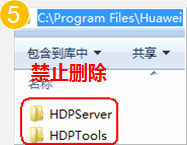
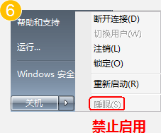

| 禁用操作（一） 禁用操作（二） |
|
5. 禁止删除C:\Program Files\Huawei目录下的文件和文件夹。 6. 禁止对VM执行睡眠操作。VM默认不启用睡眠操作。 7. 禁止执行修改路由的脚本或命令，如route DELETE *。 8. 禁止修改HDP客户端（Access Agent）配置文件。 9. 禁止在Windows防火墙例外选项中删除以下端口： 28511\28512\28521\28522。 10. 禁止任务管理器中结束以下进程： LOCAL SERVICE、NETWORK SERVICE、SYSTEM。 11. 禁止运行魔法兔子或windows优化大师对注册表进行清理和优化。 12. 禁止打开IPsec等具有禁用网络流量功能的软件或工具。 13. （慎用操作）自定义安装具有复杂变换功能的屏保。 该操作会消耗大量系统资源，用户重新进入VM桌面时会有一定的延迟。 |
C:\Program Files\Huawei目录下的文件和文件夹。" />  |